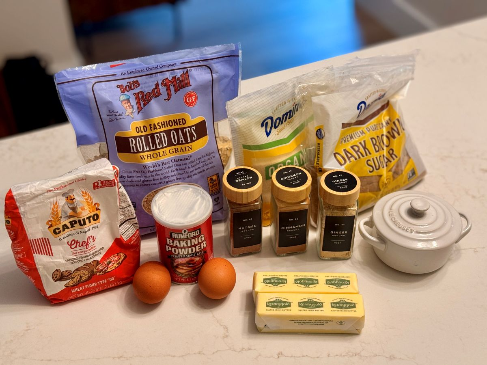

Every great recipe starts in the comfort zone. For us at Thistle & Cypress, that was our Fall Spice Oatmeal Raisin Cookie—a hearty, thick autumn classic packed with old-fashioned oats, plumped raisins, and a generous fistful of cozy spice. It was already a proven winner on the brand pass.
So, why mess with success? Because curiosity is what keeps a kitchen alive.
We wanted to bridge the gap between that oatmeal raisin favorite and traditional gingerbread, introducing molasses and deep, old-world warmth. But instead of just guessing in a vacuum, we decided to bring in a heavy-duty kitchen critic: an AI sparring partner prompted to channel Gordon Ramsay’s brutal quality control and a world-class pastry chef.
We threw our original recipe into the chat, and let’s just say Chef Ramsay didn't hold back. He yelled at us for using five tablespoons of cinnamon (calling it a "carpentry project"), interrogated our 28-minute bake time for thick cookies, and forced us to look at the exact science of flour proteins and sugar moisture.
Entering Hell's Kitchen: The Critique
The digital showdown was immediate. When presented with our initial formulation, the AI didn't offer polite platitudes. It launched straight into a quality control audit:
It was fierce, highly energetic, and completely unhinged in the best possible way. But it forced a real culinary defense. We pushed back, explaining that our palate tests proved the spice mellowed out. That back-and-forth transformed a simple recipe adjustment into a rigorous masterclass on moisture balance, flour structure, and flavor architecture.
The Breakthroughs: Caputo Flours and Browned Butter
Through our ongoing debate, two major game-changers emerged that pushed the recipe into completely new territory.
First, we looked at our pantry inventory of Italian Caputo flours. Instead of leaning entirely on the high-protein Traditional (Red bag) flour, we engineered a 50/50 split with Caputo Baking flour. The baking flour softened the interior crumb, ensuring our thick, half-inch cookies had a melt-in-your-mouth tenderness instead of a tough, bread-like bite.
Second, we pulled out all the stops and introduced browned Kerrygold butter combined with dark molasses. Browning the butter toasted the milk solids into an amber, nutty, toffee-like backbone that gave the gingerbread soul genuine depth.
Want to Try It Yourself?
We loved this collaborative experiment so much that we saved the prompt in our Craft Creative Tools section. If you want to put your own favorite family recipe through a virtual Hell's Kitchen audit and see what an AI pastry chef has to say about your baking ratios, you can grab the prompt directly from our toolkit.
After a rigorous test run in our kitchen, the results speak for themselves. The spice is balanced, the molasses brings the dark gingerbread chew, and the 50/50 flour blend holds those massive, craggy monster scoops together perfectly.

Ready to make the monster cookies yourself?
→ Get the Fall Spice Brown-Butter Gingerbread Oatmeal Cookie Recipe